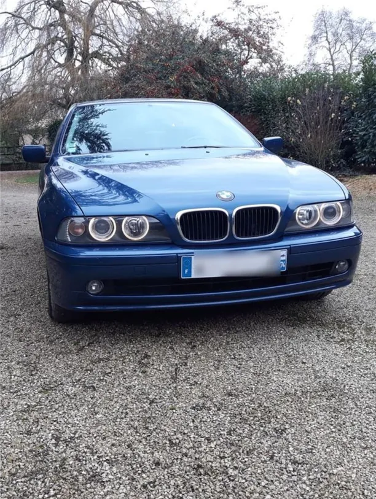
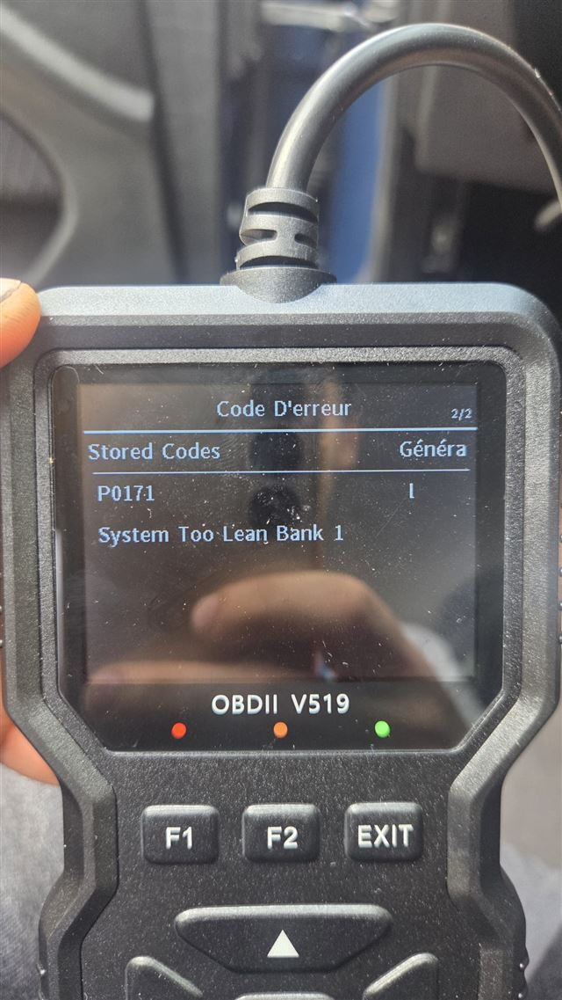
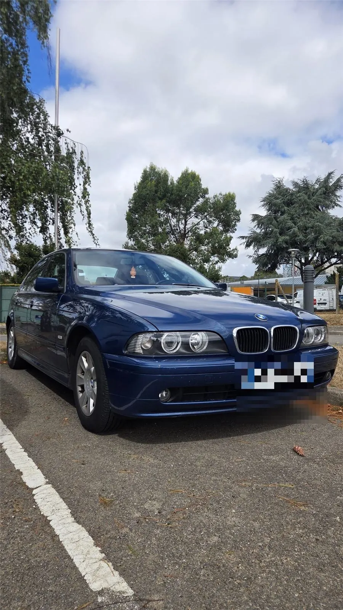
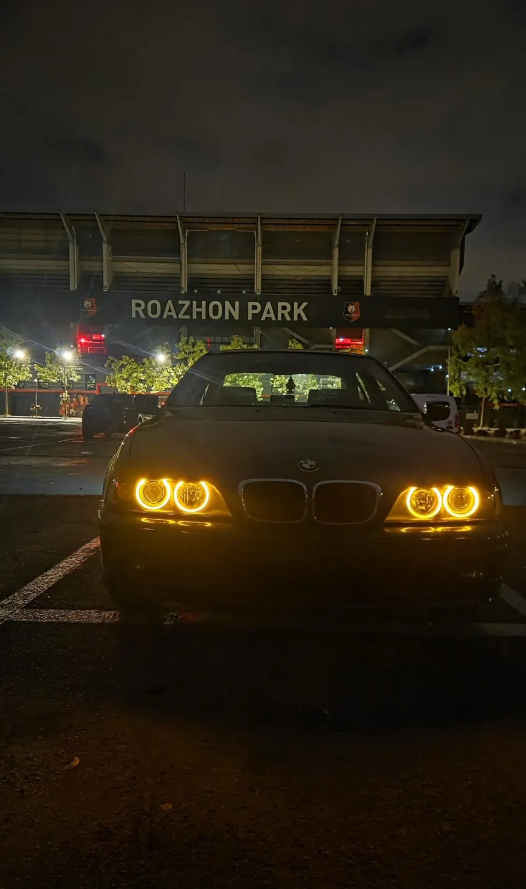
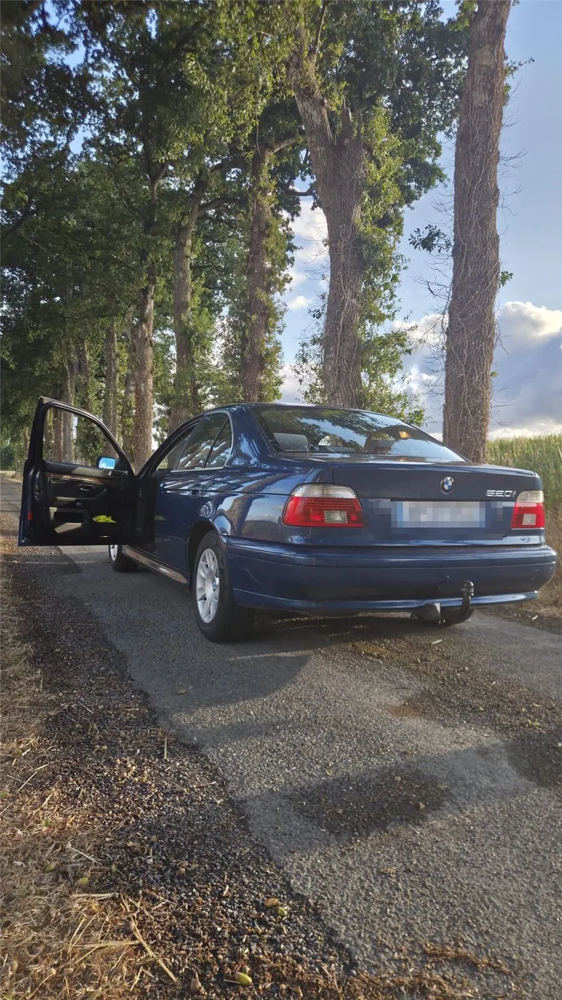
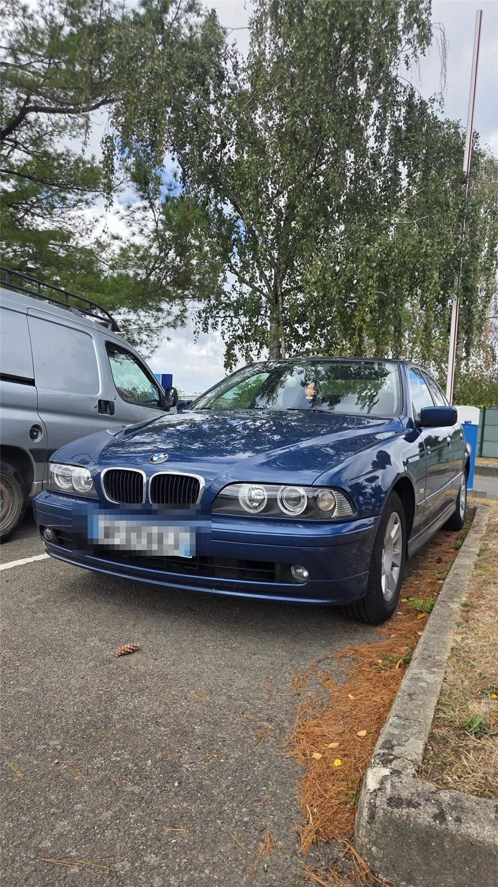

Projet automobile · en cours
BMW E39 520i
Une berline de 2002, achetée le 16 août 2026 à environ 164 000 km. Une base saine, de l'entretien à reprendre — et un mélange pauvre à comprendre. Chaque intervention a été mesurée, raisonnée, puis vérifiée.
- MoteurM54B22
- Architecture6 cylindres en ligne
- Cylindrée2,2 L
- Puissance170 ch
- GestionSiemens MS43
- BoîteManuelle


Fiche technique
La 520i, en chiffres.
BMW 520i E39 berline, 2002, boîte manuelle.
Moteur
- Moteur
- M54B22, 6 cylindres en ligne
- Cylindrée
- 2 171 cm³
- Puissance
- 170 ch à 6 250 tr/min
- Couple
- 210 Nm à 3 500 tr/min
- Puissance fiscale
- 11 CV
Transmission et freinage
- Transmission
- Propulsion
- Boîte
- Manuelle, 5 rapports
- Freins
- 4 disques, ventilés à l'avant
- Jantes et pneus
- 15 pouces aujourd'hui (205/65 R15) ; changement de jantes prévu (la maquette montre des 17 pouces)
Gabarit
- Longueur × largeur × hauteur
- 4 775 × 1 800 × 1 435 mm
- Empattement
- 2 830 mm
- Poids
- 1 495 kg
- Coffre
- 460 L
- Réservoir
- 70 L
Performances et consommation
- Vitesse maximale
- 226 km/h
- 0 à 100 km/h
- 9,1 s
- Urbaine
- 12,2 L/100 km
- Extra-urbaine
- 7,1 L/100 km
- Mixte
- 9,0 L/100 km
Ma voiture, lue et mesurée
- Kilométrage
- Environ 168 000 km (novembre 2026)
- Logiciel du calculateur
- 430037 (référence 7511570)
- Puissance estimée
- ≈ 170 ch DIN mesure sur route du 14/11
- Injecteurs
- D'origine, environ 64 à 65 % d'ouverture à fond au SP98
- Limiteur
- Vers 6 500 tr/min
Encyclopédie
Le tour du propriétaire.
Touchez un point pour découvrir l'équipement ; portes, capot et coffre s'ouvrent au clic. Puis installez-vous au volant.
Glissez pour tourner autour de la voiture · clic droit pour déplacer
Place du conducteur : glissez pour regarder autour de vous
Documentation
Le M54 expliqué.
La voiture en 14 grands groupes, de la mécanique à la carrosserie : 84 fiches en tout. Dépliez le détail d'un groupe pour ouvrir la fiche d'une pièce : sa place dans la voiture, la pièce seule en 3D et, quand elle existe, sa photo réelle.
La maquette reste une simplification : de nombreux petits éléments — durites, colliers, faisceaux électriques, capteurs, visserie — ne sont pas représentés.
Passer la visite guidée : aller à la maquetteRéel ou maquette
La photo, la maquette.
Un vrai compartiment moteur de E39 à moteur M54, et la maquette vue sous le même angle, capot ouvert. Faites glisser le curseur pour passer de l'un à l'autre.

Index des pièces
Toutes les pièces.
Une fiche par pièce : sa place dans la voiture et la pièce seule, en 3D. Dépliez une catégorie.
La maquette reste une simplification : de nombreux petits éléments — durites, colliers, faisceaux électriques, capteurs, visserie — ne sont pas représentés.
Le moteur
Le M54 en pièces.
Une maquette du six cylindres dans sa carrosserie : faites-la tourner, ouvrez la vue éclatée, cliquez une pièce pour ouvrir sa fiche. Portes, capot et coffre s'ouvrent au clic ; le cache moteur se retire.
La maquette reste une simplification : de nombreux petits éléments — durites, colliers, faisceaux électriques, capteurs, visserie — ne sont pas représentés.
Simulation · point mort
- Liquide de refroidissement
- Carburant (départ)
- Carburant (retour au réservoir)
- Huile moteur
- Ils circulent quand le moteur tourne (bouton Accélération).
Affichage
Chargement de la vue 3D…
La méthode
Mesure, hypothèse, vérification.
Une seule modification à la fois, puis relecture des valeurs avant de conclure. C'est la règle qui évite de remplacer trois pièces pour une panne qui n'en demandait qu'une.
-
01 · Mesure
Le calculateur ajoute de l'essence des deux côtés : +7,0 % / +4,7 % au ralenti le 08/10, puis +8,6 % / +6,3 %. Codes P0171 et P0174 : mélange trop pauvre.
-
02 · Hypothèse
Le banc 1 a environ 2 points d'avance : une prise d'air côté banc 1. Le débitmètre de 2001 sous-lit de 6 à 7 % à fort débit : un contributeur commun.
-
03 · Vérification
Test fumée le 14/10 : la fuite est au manchon d'admission. Débitmètre neuf, joint DISA remplacé. Relevé après intervention : 0 % / 0 %.
Les chantiers
Ce qui a été fait.
Août 2026
-
16/08/2026
L'achat
Une 520i phase 2 de 2002, boîte manuelle, achetée à environ 164 000 km. Pas de rouille, des factures d'entretien, et un contrôle technique passé proprement après l'achat.
Le 23/08, premières captures du VANOS en direct.
Les défauts connus à l'achat
- Plastiques de réglage des phares cassés.
- Défaut du capteur de position d'arbre à cames.
- Plastique du bouton d'antibrouillard déclipsé.
- Première immatriculation · 21/08/2002
- Moteur M54B22 · calculateur Siemens MS43
Septembre 2026
-
Fin août · septembre 2026
Les premiers codes : mélange pauvre
La valise V519 affiche P0171 et P0174 : mélange pauvre sur les deux bancs. Le calculateur ajoute de l'essence pour compenser de l'air qui entre quelque part.
- +8,6 %correction banc 1 au ralenti
- +6,3 %correction banc 2 au ralenti
- +12,5 %jusqu'à cette valeur en charge
Le 27/09, recherche sur la pompe à essence AEM 340, compatible E85, avant de la commander.
Octobre 2026
-
03/10/2026
Pompe à essence AEM 340 L/h
La pompe d'origine fatiguait : démarrages difficiles, plusieurs coups de clé, perte de puissance. Le diagnostic n'a pas été fait au doigt mouillé : la pression de rampe a été vérifiée au kit manomètre — trop basse.
Remplacement par une AEM 340 L/h (réf. 50-1220), choisie pour sa compatibilité E85. Un calage juste après le montage venait des raccords sertis faits maison, pas de la pompe. Depuis : ralenti normal, reprises meilleures.
Leçon : jamais de raccordement sur le faisceau d'origine sans adaptateur — une polarité inversée fait tourner la pompe à l'envers.
- AEM 340 L/h · 50-1220
- Pression attendue : ~3,5 bar (spécification)
-
08 — 09/10/2026
Diagnostic du mélange pauvre
Log complet du calculateur (MS430DS0, environ 110 points) et lectures à la valise V519. Les corrections carburant montent des deux côtés, le banc 1 devant.
- 42 %ouverture des injecteurs à 4 646 tr/min : sains, loin du seuil de 85 %
- 121 g/sdébit d'air mesuré, contre 129 à 140 g/s attendus : le débitmètre sous-lit
- +2 ptsd'écart banc 1 / banc 2 : le signe d'une prise d'air localisée
Les deux causes coexistent sans se contredire : une prise d'air côté banc 1 et un débitmètre vieilli. Le test fumée tranchera la première ; un débitmètre neuf, la seconde.

Photo réelle : le code P0171 lu au V519. -
09/10/2026
Premier plein mélangé à l'E85
30 L de SP98 et 15 L d'E85 à 165 509 km, avec la nouvelle pompe. Soit environ E27 à E32 selon la teneur de l'E85 (estimation).
L'effet sur les corrections n'a pas pu être isolé : le débitmètre a été changé entre deux logs, et la prise d'air était encore là.
-
13/10/2026
Débitmètre neuf et joint DISA
Le débitmètre d'origine Siemens 5WK9 605 (BMW 13 62 1 432 356), daté de 2001, est remplacé par un Pierburg 7.07759.09.0. Le même soir, le joint de la DISA — légèrement aplati — est changé.
Correction long terme du jour (LTFT) : +3,1 % / 0,0 %. Le banc 2 est revenu à zéro, le banc 1 garde un reste : la prise d'air n'est pas encore trouvée.
- Débitmètre neuf · Pierburg 7.07759.09.0
- Ancien · Siemens 5WK9 605 (2001)
Le débitmètre mesure la masse d'air : 3,0 g/s au ralenti, 121 g/s en pleine charge en 3e (relevés du 08/10, ancien débitmètre). La DISA change la longueur du chemin de l'air. Son joint aplati était un candidat côté banc 1 : remplacé le 13/10. -
14/10/2026
Test fumée : la fuite est trouvée
Avec la machine à fumée d'un ami, moteur froid et arrêté, durite obturée côté filtre : la fumée suit le chemin de l'air et ressort là où l'air non mesuré entrait. Verdict : fuite au manchon d'admission.
Le manchon d'admission et le raccord en F sont remplacés. L'air qui entrait sans passer par le débitmètre ne fausse plus le dosage.
- Manchon débitmètre → papillon : fuite
- Joint DISA · durites CCV · bouchons du collecteur · tube de jauge
- Raccord en F · BMW 13 32 7 503 677, posé le 16/10
-
18/10/2026
Réfection complète du refroidissement
Le 2 octobre, le liquide s'échappait par le bouchon à chaud : un bouchon neuf de 1,4 bar qui ventile, c'est une surpression réelle. Le radiateur fuyait — patch époxy le 6 octobre, en attendant les pièces.
Le kit complet est monté : radiateur Nissens 60648A, pompe à eau Meyle 313 011 2001, thermostat Mahle TM 13 97, puis purge soigneuse du circuit.
- Radiateur · Nissens 60648A
- Pompe à eau · Meyle 313 011 2001
- Thermostat · Mahle TM 13 97
Froid : clapet fermé, petit circuit. Chaud : la cire se dilate, le clapet s'ouvre, le radiateur entre en jeu. Sur le roulage du 08/10, le liquide est resté entre 83 et 98 °C. -
21 · 25/10/2026
Caisson de basses, posé et mesuré
Un caisson MTX RTP12x2 (double 30 cm, 360 W RMS) dans le coffre, avec un passage découpé dans la cloison. La chute est gardée pour pouvoir refermer.
- 125,2 dBniveau moyen mesuré au siège conducteur (dB(Z))
- 90 Aalternateur vérifié
- 13,7 Vcharge en roulant
Mesures et réglages
- Mesure de référence du 23/10, moteur coupé : moyenne 125,2, maximum 130,2, crête 130,5 dB(Z). Le micro du téléphone plafonne vers 130 dB.
- Réglages retenus : caisson activé, filtre passe-bas à 80 Hz, phase normale.
- La découpe reste au format d'origine (environ 540 cm²) : ce panneau tient la caisse entre les coupelles d'amortisseurs.
- Reste à faire : la malle qui vibre, puis le réglage final du gain après rodage.
-
23 · 31/10/2026
Pneus, huile et alternateur : les points à suivre
Les pneus arrière sont presque aux témoins, usés au centre (surgonflage). Leur remplacement passe en priorité ; en attendant, moins de 100 km/h.
Le reste du suivi
- La voiture roule sur la roue de secours depuis le 10/10. Vibration à 110 km/h : la roue de secours est le premier suspect.
- Huile : consommation nulle en conduite normale. Une mesure après des passages au rupteur n'est pas valable (voiture penchée). Le recyclage des vapeurs d'huile (CCV) est soupçonné.
- 27/10 : pas de nettoyage des pistons pour l'instant. Ordre retenu : jauge à froid sur sol plat, huile dans le manchon, puis compression.
- Bougies : NGK BKR6EQUP, 31 ± 2 Nm, filets secs.
- 31/10 : c'est la chaleur des diodes qui use un alternateur chargé. Éviter le plein volume prolongé au ralenti.
Novembre 2026
-
06/11/2026
Premier diagnostic complet au PC
INPA et un câble K+DCAN, en lecture seule : rien n'est effacé ni écrit. Un trajet de 20 km enregistré à 5 mesures par seconde. À chaud, le moteur est sain.
- 8 074mesures sur le trajet, sans coupure
- 1,00correction lambda des deux bancs en roulant, moteur chaud
- 64,9 %ouverture maximale des injecteurs (12,18 ms à 6 399 tr/min)
Les défauts trouvés
- Capteur ABS avant gauche, défaut enregistré à 2,75 km/h, ABS et antipatinage passifs.
- Ratés cylindres 4 et 5, à froid seulement, intermittents.
- Sonde de sortie de radiateur à −48 °C en permanence (innocentée le 13/11).
- Mélange riche banc 1, mémorisé une fois au ralenti à 66 °C.
- Transpondeurs des clés 0 et 2 faibles, LED d'alarme en coupure, capteur de recyclage d'air en coupure.
Ce qui va bien
- VANOS actif des deux côtés : admission de 112° à 81°, échappement de −105° à −87°.
- Moteur entre 93 et 97 °C, huile à 100 °C au maximum, batterie entre 13,6 et 13,9 V en roulant.
- Ralenti stable à 750 tr/min.
- Pied au plancher, le calculateur ne corrige plus avec les sondes : la valeur reste alors figée à 1,00.
-
08/11/2026
Lecture complète et copie du calculateur
Tous les modules sont interrogés, puis le logiciel du calculateur est copié avec MS4x Flasher. Verdict : logiciel 430037, et pas 430069 comme supposé. Le même jour, les ratés à froid sont pris sur le fait.
- 8modules qui répondent
- 23 ratéstous sur le cylindre 4, entre 11 et 15 °C, au ralenti
- 537 kg/hdébit d'air maximal à pleine charge (149 g/s)
Le détail de la journée
- Modules qui répondent : moteur (MS43), carrosserie, antidémarrage, volant, ABS, climatisation, combiné, éclairage.
- Copie du calculateur : 524 288 octets, référence BMW 7511570. L'original est gardé en lecture seule ; on travaille sur une copie.
- Ratés : 23 en 20 s environ, puis plus aucun jusqu'à 98 °C. Aucun sur le cylindre 5 ce jour-là.
- ABS avant gauche : il suit les autres roues jusqu'à environ 20 km/h, puis reste à 2,0 km/h, la valeur « pas de signal ». Le capteur n'est pas mort ce jour-là.
- Pleine charge : injecteurs ouverts à 64,2 % au maximum, limiteur vers 6 500 tr/min.
- Logiciel · 430037
- Référence calculateur · 7511570
-
11/11/2026
Les cartographies, lues une par une
La copie du calculateur est ouverte dans TunerPro avec la définition du logiciel 430037. Rien n'est modifié : on lit ce que fait le calculateur d'origine.
- +9 à +10 %d'essence en plus à pleine charge (+12,5 % à 6 480 tr/min)
- +15 %limite haute de l'adaptation du mélange
- −12 %limite basse
Comparaison avec un autre logiciel
- Comparé à un fichier d'exemple 430069 : démarrage et avance identiques, enrichissement à pleine charge plus faible sur ma voiture.
- Les adresses diffèrent : toute modification devra utiliser la définition 430037.
- Correction additive limitée à ±0,40.
-
13/11/2026
Bobines échangées et sonde de radiateur innocentée
Pour savoir si les ratés suivent la bobine, deux paires de bobines sont échangées. La sonde de sortie de radiateur, crue morte, est mesurée : elle est bonne.
- 1,93 kΩsonde de radiateur, tiède
- 5 Vsur la prise du faisceau
- −4,39 %correction sur chaque banc en fin de trajet
Le détail : bobines, sonde, défauts
- Bobines : cylindre 1 = bobine n°4, cylindre 2 = n°5, cylindre 4 = n°1, cylindre 5 = n°2. Bougies inchangées (posées en 2021).
- Démarrage à 28,5 °C, trop chaud pour voir les ratés : test à refaire à froid.
- Le −48 °C venait d'une valeur inutilisable du bloc de mesures sur ce logiciel. Le débrancher crée bien un défaut : le calculateur lit la sonde.
- Défauts notés puis effacés (airbag exclu). ABS : prise nettoyée, sans effet.
- La pompe à eau additionnelle avait été débranchée par erreur : elle explique probablement un défaut de la climatisation.
- La pleine charge n'a pas été enregistrée : l'enregistreur n'était pas lancé, puis la liaison avec le câble a échoué.
-
14/11/2026 · 18h31
Démarrage à froid, bobines échangées
Moteur à 10,5 °C, enregistreur lancé avant le démarrage. Aucun raté. L'irrégularité à froid reste sur les cylindres 4 et 5 : elle n'a pas suivi les bobines. Les suspects deviennent la bougie, l'injecteur ou une prise d'air de ces cylindres. C'est un indice faible, pas une preuve.
Irrégularité maximale par cylindre, entre 11 et 15 °C
Cylindre 1 2 3 4 5 6 Irrégularité 1,20 0,37 1,51 2,09 2,10 0,99 À chaud, des pics de 1,2 à 3,3 n'apparaissent qu'en transition, sur plusieurs cylindres. Corrections mémorisées : −1,64 % banc 1, −4,47 % banc 2.
-
14/11/2026 · soir
Puissance mesurée et premier mélange E85
Une séance complète : passages à fond avec le GPS du téléphone, test ABS, jauge lue par la prise OBD, puis 10 L d'E85 sur environ 30 L de SP98. Tout est détaillé plus bas.
- ≈ 170 chpuissance estimée, norme DIN
- Aucunsignal du capteur ABS avant gauche
- +3,6 / +3,1points de correction du mélange après l'E85, sans défaut
Le résultat
Retour à zéro.
Les corrections long terme (LTFT) disent combien d'essence le calculateur ajoute pour compenser. Après l'intervention, il n'a plus rien à corriger. Le 25/10, le dossier est clos : il retire même un peu d'essence, avec un écart stable entre les bancs.
Dans le calculateur moteur (le DME, ici un Siemens MS43), cette correction en pourcentage s'appelle MUL (multiplicative). Une seconde, l'ADD (additive), ajoute ou retire une petite quantité fixe : elle pèse surtout au ralenti.
| Relevé | Banc 1 | Banc 2 |
|---|---|---|
| 08/10 · V519 | +7,0 % | +4,7 % |
| V519 (photos du 09/10, mesure non datée) | +8,6 % | +6,3 % |
| 13/10 | +3,1 % | 0,0 % |
| Après intervention · relevé ponctuel | 0 % | 0 % |
| 25/10 · suivi | −3,9 % | environ −1 % |
| 08/11 · INPA, moteur chaud (MUL) | −3,57 % | −3,85 % |
+3,1 %
LTFT banc 1
0,0 %
LTFT banc 2
Les relevés
Les relevés, en vrai.
Données AVANT réparation — roulage du 08/10/2026, log MS430DS0. Valeurs approximatives, relevées sur les graphiques du carnet de bord.
Corrections carburant
Positives = le calculateur ajoute de l'essence pour compenser un mélange pauvre.
VANOS : consigne contre réel
Admission et échappement, en degrés vilebrequin : la position réelle suit la consigne.
Sondes lambda
Tension des 4 sondes, en volts (VKAT = avant catalyseur, NKAT = après). Les sondes amont basculent entre pauvre et riche ; sur ce log, les sondes aval oscillent presque autant (écart-type ~0,32 V contre ~0,35 V). Les courbes sont présentées telles quelles, sans conclusion sur l'état des catalyseurs.
Températures
Liquide de refroidissement, huile (modélisée) et air admis, en °C.

La valise V519
Photo réelle : LONGFT1 +8,6 %, LONGFT2 +6,3 % au ralenti (752 tr/min). La dérive continuait, banc 1 devant.
Les mesures du 14/11
La puissance, mesurée sur route.
Le 14/11 au soir, avec l'enregistreur et le GPS du téléphone. La puissance estimée correspond aux 170 ch annoncés par BMW. Le premier mélange à l'E85 passe sans défaut.
- ≈ 170 chnorme DIN, moyenne de 5 500 à 6 400 tr/min (± 8 ch)
- ≈ 215 Nmcouple presque plat de 2 600 à 5 400 tr/min
- ≈ 20 à 23°avance à fond au-dessus de 2 500 tr/min
- +2,2 %le compteur affiche trop, comparé au GPS
- +3,6 / +3,1points de MUL (banc 1 / banc 2) après 10 L d'E85
Comment la puissance est calculée
- Trois passages pied au plancher en 3e, sur la même portion, dans les deux sens (19:45, 19:47 et 19:48).
- La vitesse vient du régime : 47,7 tr/min par km/h réel en 3e, mesuré au GPS sur des portions à vitesse stable. La vitesse du calculateur est en retard quand la voiture accélère.
- L'accélération donne la force : masse estimée 1 548 kg, ×1,068 pour les pièces qui tournent, plus l'air (Cx·S 0,62) et les pneus (0,013).
- La pente vient de l'altitude GPS : +0,32 %, −0,45 % et +0,37 %. Puis on fait la moyenne aller et retour, pour compenser le vent.
- On ajoute 15 % de pertes dans la transmission, puis on ramène aux conditions de la norme DIN 70020.
C'est une estimation, pas un passage au banc. Le poids réel du conducteur est inconnu ; la masse, le Cx·S et les pertes sont supposés, d'où la marge de ± 8 ch. Une fois la pente corrigée, les trois passages donnent 167,1, 171,7 et 169,5 ch.
Puissance
Au moteur, norme DIN. Moyenne aller-retour des trois passages, par tranche de 250 tr/min.
Couple
Déduit de la puissance et du régime.
Avance à l'allumage, pied au plancher
Médiane par tranche de 500 tr/min, pédale à plus de 80 %, au SP98. C'est la référence à comparer avec l'éthanol.
Premier mélange : la correction monte
Correction MUL apprise par le calculateur, trajet après 10 L d'E85. Positif = il ajoute de l'essence.
Capteur ABS avant gauche : plus de signal
Vitesse des deux roues avant pendant l'essai. La gauche reste à 2 km/h, la valeur « pas de signal ». Capteur, faisceau ou prise : pas encore contrôlé.
Les trajets, vus par le GPS
Traces du téléphone, sans fond de carte. Les 500 premiers et derniers mètres de chaque trajet sont retirés. En violet : les trois passages à fond.
Vitesse GPS
Trajet des passages à fond, en fonction de la distance.
Altitude GPS
Même trajet. Elle sert à corriger la pente des passages.
Les trois passages : sens, pente, puissance
Air admis entre 12 et 25,5 °C pendant les passages, pression 1 014 hPa, lus par le calculateur. La correction DIN est faite point par point avec ces valeurs.
Niveau d'essence lu par la prise OBD
Le calculateur moteur n'a pas de lecture du niveau : il vient du combiné d'instruments. L'outil le trouve tout seul, en lecture seule.
29 + 10 font 39, pas 42 : la jauge a une incertitude de quelques litres. Pendant le trajet suivant, elle varie de 36 à 46 L.
Ratés, cliquetis et défauts pendant la séance
- Au SP98 : 2 ratés sur le cylindre 5 et 1 sur le 6 entre 19:19 et 19:57 (le mode rapide des passages ne lit pas ces compteurs), puis 1 sur le cylindre 2 pendant l'essai ABS. Aucun défaut moteur au début ni à la fin.
- Après l'E85 : 1 raté sur le cylindre 4 sur tout le trajet, aucun défaut moteur.
- Adaptation anti-cliquetis (KR, le recul d'avance que le calculateur apprend quand le moteur cogne) : 0 sur l'essai ABS et sur le trajet à l'E85. Le mode rapide des passages ne la lit pas.
- Avance à fond : quelques valeurs basses (7,5°) seulement au moment où la pédale s'enfonce. Les valeurs négatives viennent du pied levé ou du rupteur (6 421 tr/min).
Premier mélange : les chiffres
- 10 L d'E85 sur 29 à 32 L de SP98 (estimation, d'après la jauge). Soit environ E18 à E24 selon la teneur de l'E85 d'hiver (60 à 85 % d'éthanol).
- Trajet de 14,5 km, pédale à 54 % au plus, 114 km/h au plus.
- Correction MUL : −1,90 / −4,48 % jusqu'à 20:32, puis +1,72 / −1,37 % à partir de 20:33. L'adaptation n'est pas finie.
- Correction additive (ADD) : de −0,176 / −0,136 à −0,088 / −0,060.
- Attendu par le calcul : +4,8 à +7,1 % de carburant. La limite du calculateur est à +15 %.
0 à 100 km/h, injecteurs, compteur et roue libre
- 0 à 100 km/h : 11,1 s au compteur, sur un seul essai (BMW annonce 9,1 s).
- Ouverture maximale des injecteurs : 63,8 % à 6 454 tr/min. Le 06/11, c'était 64,9 % à 6 399 tr/min.
- Vitesse du compteur : 2,2 % trop haute (rapport GPS / compteur de 0,976 à 0,988 à vitesse stable).
- Roue libre au point mort, vers 20:03 : Cx·S entre 0,56 et 0,64. Estimation du PC portable, non recalculée, dans un seul sens : à confirmer.
Les outils
Lire la voiture sans rien casser.
Tout passe par un câble d'une vingtaine d'euros et des scripts maison. Règle de base : on lit, on n'écrit jamais dans un module sans l'avoir décidé.
- 1 seul PCbranché à la voiture. L'autre analyse et prépare
- 0 modificationdu logiciel du calculateur à ce jour
- 5 / smesures par seconde, contre une toutes les 0,8 s au téléphone
- ≈ 20 €le câble K+DCAN entre la prise OBD et le PC
La chaîne de diagnostic
- Câble K+DCAN (puce FTDI) entre la prise OBD et le PC portable.
- EDIABAS et INPA : le moteur de communication de BMW et ses écrans de diagnostic. Ils parlent à chaque module, dont le calculateur moteur (le DME).
- MS4x Flasher : copie du logiciel du calculateur, en lecture.
- TunerPro : lecture des cartographies sur une copie, sur le PC fixe.
- Deep OBD sur Android : les premiers logs, le 08/10, avec le même câble.
L'enregistreur maison
- Un script PowerShell qui parle à EDIABAS : bloc moteur à chaque tour, les autres valeurs moins souvent.
- Liste blanche : seuls les jobs de lecture sont autorisés. Les commandes d'effacement, de test actif ou de programmation sont refusées.
- Ajouts du 14/11 : avance réelle, recul pour cliquetis, sonde de sortie de radiateur et niveau d'essence lu au combiné.
- Défauts relus au début et à la fin. Incidents de communication datés. Arrêt propre sans clavier.
- Tout est testé en simulation sur le PC fixe avant d'aller à la voiture.
Deux PC, une règle
- Le PC portable est le seul branché à la voiture : lecture, logs, copie du calculateur.
- Le PC fixe ne touche jamais la voiture : analyse, calculs, préparation, documentation.
- Chaque chiffre est revérifié dans le fichier brut avant d'être noté. Les erreurs corrigées sont gardées dans un journal.
Le code
Les scripts génériques sont publics : e39-ediabas-tools sur GitHub. Lanceur INPA portable en un clic, enregistreur de trajet, lecture de jobs EDIABAS et analyse de trajet, sans aucun logiciel BMW dedans.
Les données de la voiture (logs, copie du calculateur, notes) restent dans des dépôts privés.
La suite : l'éthanol
Rouler à l'E85, pas à pas.
Une reprog faite soi-même sur le logiciel d'origine, qui garde l'antidémarrage et reste utilisable au SP98. Rien ne sera écrit dans le calculateur avant d'avoir réglé les ratés à froid et mesuré la pression d'essence.
- 0,3 ×les litres présents : la dose d'E85 à mettre sans reprog
- +15 %limite d'adaptation du calculateur d'origine
- 64,9 %ouverture des injecteurs à fond au SP98
- 83 à 91 %ouverture prévue à l'E85 pur : faisable, sans marge
- FaitLecture du calculateur, enregistreur complété, logs de référence au SP98.
- En coursPremier petit mélange sans reprog (10 L d'E85 le 14/11), démarrage à froid à suivre.
- À faireRemise en état : filtre à essence avec régulateur, pression mesurée au manomètre, durites, ratés du cylindre 4, bougies.
- À faireFichier préparé sur le PC fixe : injection ×1,30 environ, démarrage pour un mélange intermédiaire, avance d'origine.
- À faireFlash depuis le PC portable, chargeur sur la batterie, original sauvegardé en deux copies.
- À faireMise au point, puis validation au SP98, puis passage au banc avec mesure de richesse.
Quand tout arrêter et repasser au SP98
- Correction MUL au-dessus de +10 %.
- Défaut d'écart lambda.
- Ratés d'allumage.
- Avance à fond qui recule par rapport au SP98.
- Démarrage à froid difficile.
Pourquoi cette voie
- Le firmware communautaire MS43X gère le flex fuel, mais supprime l'antidémarrage et n'existe pas pour la 520i : écarté.
- Modifier les cartographies d'origine garde l'antidémarrage.
- Décision du 14/11 : la voiture doit redémarrer au SP98 ou au SP95-E10, même par grand froid, car l'E85 se conserve mal.
- Devis d'un garage le 28/10 : 650 € la reprog normale, 750 € la reprog éthanol, environ +10 ch annoncés.
Calcul du mélange et saisons de l'E85
- Hypothèses : stœchiométrie 14,7 pour l'essence et 9,0 pour l'éthanol, densités 0,745 et 0,789, base SP98 E5.
- Carburant en plus : E10 +1,8 %, E20 +5,7 %, E25 +7,7 %, E30 +9,8 %, E85 +40 %.
- Sans reprog : E20 à E25 au plus. À fond, le calculateur ne corrige plus avec les sondes, et le démarrage à froid n'est pas corrigé.
- E85 en France : 60 à 85 % d'éthanol en hiver (1er novembre au 15 mars), 70 à 85 % en été. La teneur réelle à la pompe n'est pas affichée.
Les points encore ouverts
- Capteur ABS avant gauche : faisceau, prise ou capteur à contrôler.
- Ratés à froid du cylindre 4 : nouveau test à froid, ou bougies neuves puis même test.
- Pression d'essence au manomètre, au ralenti et à 3 000 tr/min.
- Pneus arrière à remplacer.
- Test de l'alarme d'origine avant tout achat d'antivol.
Galerie
Ma voiture.





Informatique & automobile.